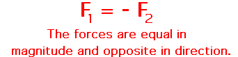
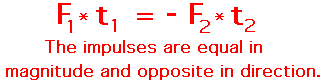

One of the most powerful laws in physics is the law of momentum conservation. The law of momentum conservation can be stated as follows.
For a collision occurring between object 1 and object 2 in an isolated system, the total momentum of the two objects before the collision is equal to the total momentum of the two objects after the collision. That is, the momentum lost by object 1 is equal to the momentum gained by object 2.
The Logic Behind Momentum Conservation
Consider a collision between two objects - object 1 and object 2. For such a collision, the forces acting between the two objects are equal in magnitude and opposite in direction (Newton's third law). This statement can be expressed in equation form as follows.

The forces act between the two objects for a given amount of time. In some cases, the time is long; in other cases the time is short. Regardless of how long the time is, it can be said that the time that the force acts upon object 1 is equal to the time that the force acts upon object 2. This is merely logical. Forces result from interactions (or contact) between two objects. If object 1 contacts object 2 for 0.050 seconds, then object 2 must be contacting object 1 for the same amount of time (0.050 seconds). As an equation, this can be stated as
Since the forces between the two objects are equal in magnitude and opposite in direction, and since the times for which these forces act are equal in magnitude, it follows that the impulses experienced by the two objects are also equal in magnitude and opposite in direction. As an equation, this can be stated as

But the impulse experienced by an object is equal to the change in momentum of that object (the impulse-momentum change theorem). Thus, since each object experiences equal and opposite impulses, it follows logically that they must also experience equal and opposite momentum changes. As an equation, this can be stated as